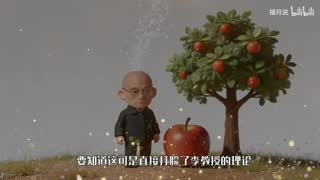
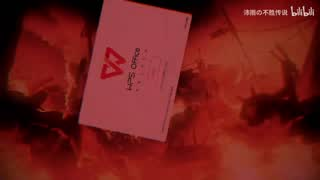
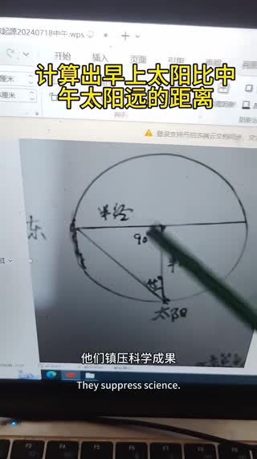
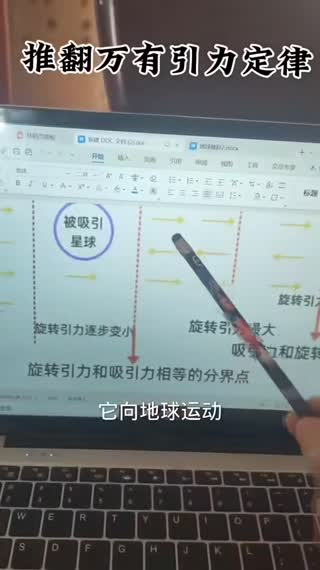

六个入口，读完整个文亚宇宙
每个页面都从同一份数据契约生成：实体带别名与出处，事件带时间码，视频带逐场景理解结果。
人物志
19 个条目
记录李文亚本人、视频内自称的组织、被点名的辩论对象与互动对象，逐条标注出处。
理论体系
12 个理论
「推翻万有引力定律」「地球的运动轨迹」「黑体生物」等自创说法的整理与证据时间码。
事件年表
27 个节点
按年份分组的时间线：从 2024 年 11 月的第一个视频到番外采访系列与最新归档进度。
梗词典
20 个词条
文亚宇宙的专有名词与网络迷因：狱卒、话疗、诺委会、114514 研究所……支持搜索与首字母筛选。
视频库
1,206 个视频
全量归档索引：缩略图占位、标题、时长、系列与标签，支持关键词、系列与标签组合筛选。
关于本站
方法论 · 声明
数据来源、理解流水线、引用规范、免责声明与隐私声明（不收录住址、健康等私密信息）。
精选视频
优先展示已产出场景卡、缩略图或 B 站来源的条目；点开任意视频可查看逐场景的画面、台词、声音与画面文字。

捕月说 B 站 11 分 59 秒BV1ZC7G6VEWG_72 岁卖房搞民科，扬言枪毙质疑者，怒怼中科院，被全网当成电子蛐蛐
72岁老人卖房搞民科，扬言枪毙质疑者，怒怼中科院，被全网当成电子蛐蛐。

沛雨の不胜传说 B 站 16 分 42 秒BV1XomMBAEY1_李文亚教授传奇的一生【寻找艺术73】
视频介绍李文亚教授传奇的一生，涵盖其艺术成就与影响。

秦王-扫六合 B 站 13 分 17 秒BV1yteP6uE9J_【新民科TV】李文亚 画图解读 《两小儿辩日》
视频分析《两小儿辩日》故事，通过画图解读其寓意。
科学研究
李文亚讨论星球引力形成，纠正太阳和银河系中心星质量数据。
推翻开普勒定律
视频讨论推翻开普勒定律，提出太阳方向变化的观察。

核心视频本体 16 分 56 秒推翻万有引力定律
李文亚讲解其著作中对万有引力定律的推翻理论，涉及地球吸引力范围与物质运动的分析。
最新事件
事件按日期分组，每个节点都可回到具体视频与时间码。
- 约1990–2010
南下务工与花卉创业
赴广深务工、在高校后勤做保洁与园丁，后自营花卉；2005 年捡到《宇宙未解之谜》（本人修正：1999 年进入深圳、2005 年开办花场、2022 年离开深圳）。
- 约1980年代–1990
乡村代课执教
在家乡高中代课，先教语文后长期教生物，累计约 16 年；约 1990 年结束（李文亚本人修正：离开林扒高中是 1998 年）。
- 2026 年 9 月 13 日
获任淮海文理学院荣誉博士职位
据年表，他被授予淮海文理学院荣誉博士职位。他在视频中展示过一批荣誉证书与奖状（视频 1096、1105），但该机构与称号目前没有可核对的第三方材料。
- 2026 年 9 月 10 日
痛批袁玉敏与「谢菲尔德」
据年表，他公开批评袁玉敏以及「谢菲尔德」——《使命召唤：现代战争》系列中的虚构人物；同样属社群虚构设定语境。